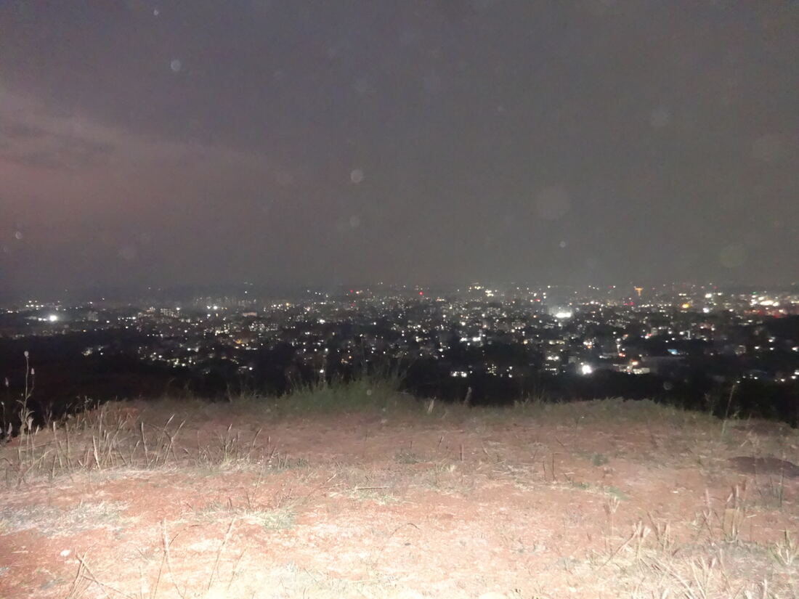
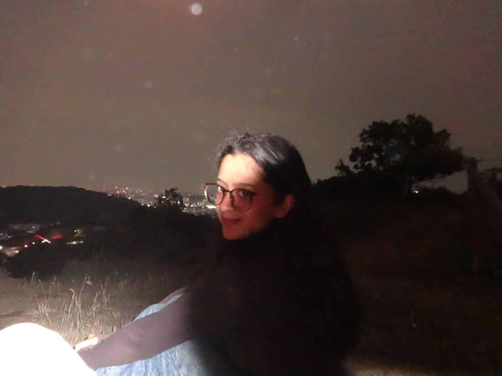
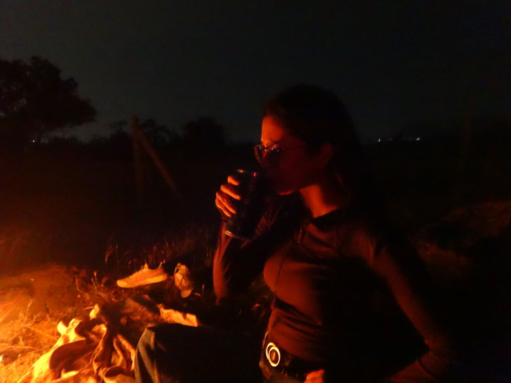
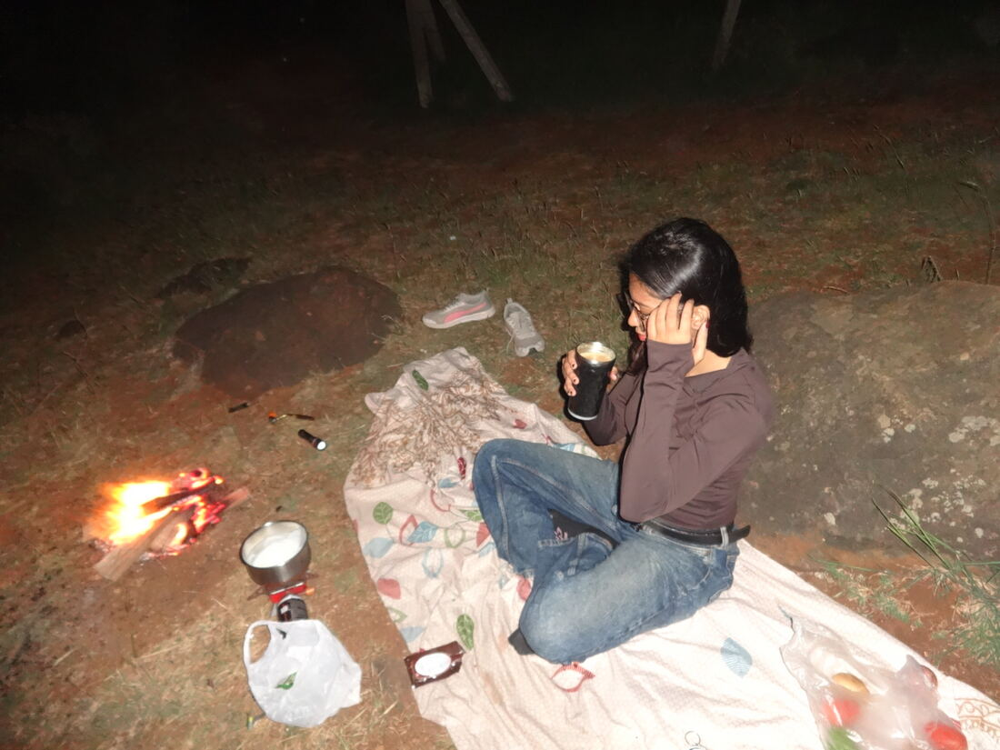
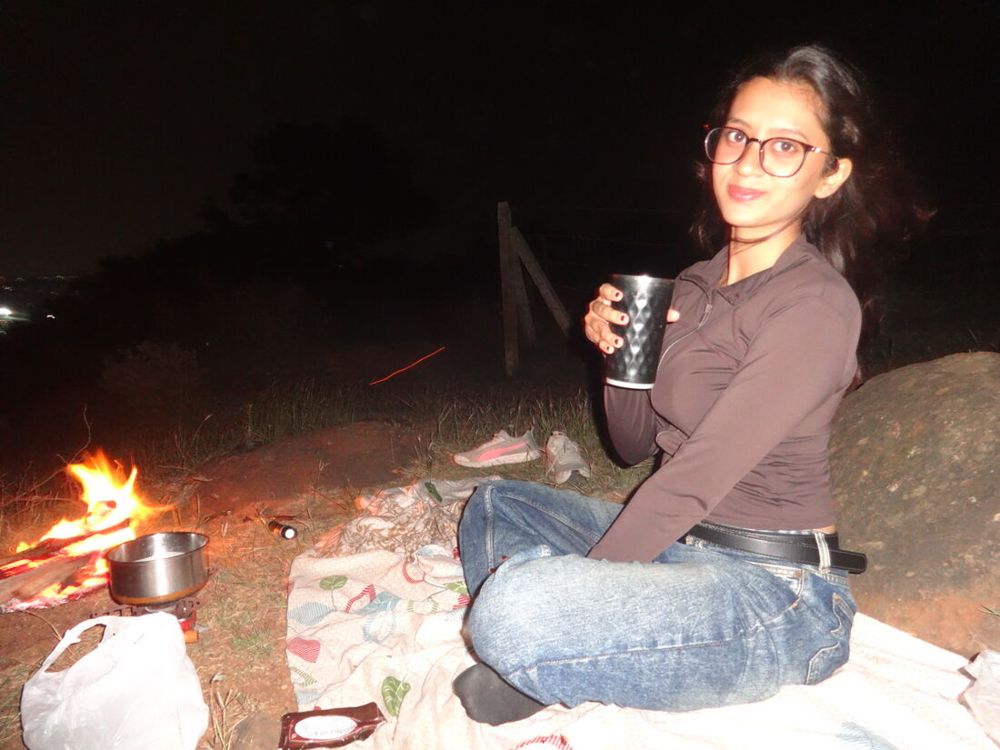
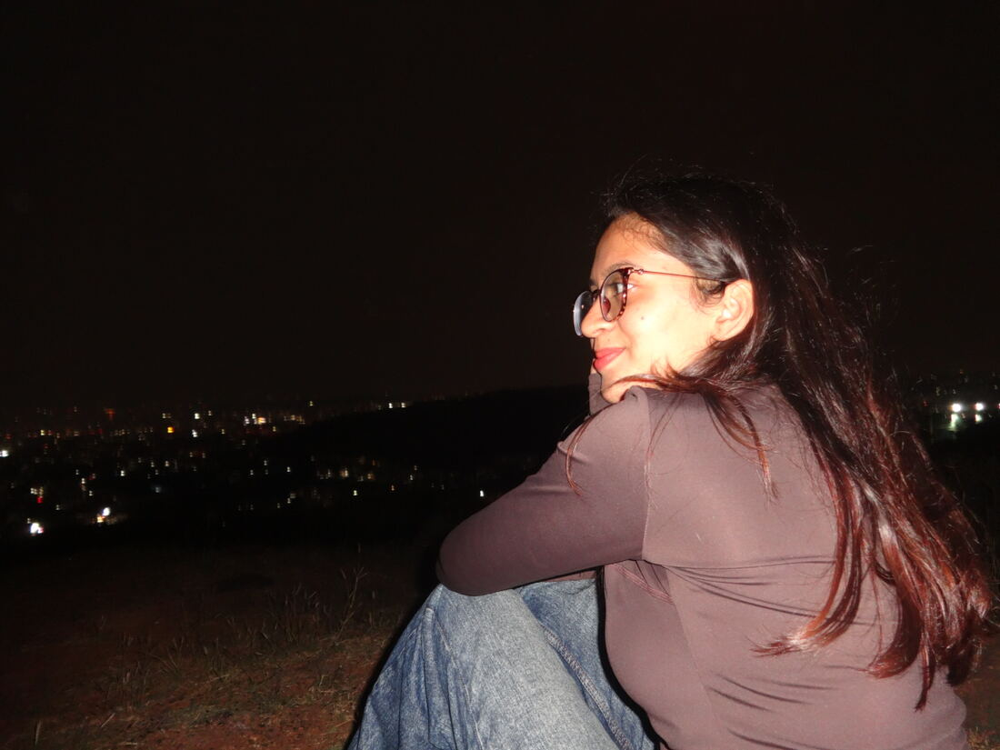

Level 0
Night
Born from fire, coffee & barbecue.
- ✓Firelit
- ✓Coffeebrewed
- ✓Barbecueplanned
- ✗Paneerforgot it
- ✓Consciousness talkunlocked
- 0Food eatennone. at all.
result: still the best night
01 — the hill
The whole city, switched on.

The sky hung low and heavy, the city glittered below, and for a while the world felt like it had stopped just for this hill.
02 — fire & coffee
Built a fire. Brewed the coffee.


A tiny stove, a blanket on the ground, a cup that looked far cooler than coffee deserves. Barbecue was the plan. Fire was the headline.
03 — the paneer incident
Mission: barbecue.
Status: success. Status: no paneer.
one (1) forgotten paneer
zero food. nobody ate anything.
untouched

The grill sat there with nothing to grill. We had fire, we had coffee, and somehow that was a full meal.
04 — the deep end
Then I got talking about consciousness.

What does it mean to be aware of this moment while it's happening?
Somewhere between the fire and the city lights I started on the big questions: awareness, what's really watching through our eyes, why any of this feels like anything at all.
Funny thing is, that night answered it a little. Fire on one side, a whole city on the other, and me completely, stupidly awake to it.
saved frames
level 0 complete
Level 1 is loading…
Requirements: one hill, one fire, one very good coffee, and paneer, actually packed this time.
saved on a hilltop · kept for you